A handheld boot screen, demo opening titles, a cassette, a glass book, a one-bit desktop, Amiga bobs, a library maze, growing pipes, a title card and megademo chrome, each made into a modern symbol. One plain wordmark. Your navy: #18223a. Every preview starts at the screenshot’s actual size: 203 × 74 pixels. All ten move; pause motion to see the static versions.
01 Boot log moves

203 × 74 · LIGHT
203 × 74 · DARK
A pixel book drops down a navy-tuned four-shade handheld screen and lands, the way a cartridge logo arrives at power-on. Plays once on load: the book descends in whole-pixel steps for about two seconds and stays.
Inspect & use
The handheld bezel with its long bottom-right curve frames a dot-matrix screen; the classic olive shades are retuned from pale sage to brand navy. The book descends in whole-pixel steps with a faint LCD ghost, then holds.
A letterboxed horizon fades up from black and pans in three parallax layers under a low warm sun, like the first part of a PC demo. Fades up from black once, then the ridges pan slowly in parallax and the stars twinkle.
Inspect & use
Letterbox bars, a palette fade and a slow sideways pan carry the opening-titles grammar into a single frame. Steel-blue VGA ranges are pulled toward the brand navy; one warm sun is the only accent.
A navy cassette with an obi-strip label ruled like a diary page; the reels keep turning and the tape slowly winds from one side to the other. Reels turn continuously; the tape packs swap size over forty seconds.
Inspect & use
The netlabel J-card becomes a cream label with a signal-red obi strip and a drawn side-A mark. Ruled label lines and a tan underline make the tape a mixtape journal, not a music-only mark.
A translucent open book turns slowly in space. Where its pages overlap, the glass deepens, like a glenz object from a nineties demo. The book turns once every sixteen seconds and two small glints pulse; the static file holds a three-quarter view.
Inspect & use
The rotating glenz solid becomes a six-leaf open book with a tan ribbon, projected in true perspective. Translucent navy faces deepen where they overlap on light pages; on dark pages they brighten like glass.
A one-bit window with a pinstriped title bar and a hard drop shadow holds an open diary; one page is checkerboard grey and an arrow pointer reaches in. The pointer nudges toward the diary every five seconds.
Inspect & use
Desktop-era one-bit rules: pinstripe title bar, close box, hard shadow and dithered grey, aligned to whole pixels. Black and white become brand navy and warm paper; a tan ribbon is the only extra colour.
Twenty-two shaded spheres ride an endless figure-eight between two hairlines, larger as they swing nearer — a timeline that keeps going. The chain circulates continuously, one lap every eleven seconds.
Inspect & use
The blitter-bob chain on a Lissajous path becomes a loop with no beginning or end. One navy ramp with a white highlight replaces the copper blue; the rainbow hairlines become steel and tan.
A first-person walk down an endless corridor of book spines toward a warm exit light, after the old 3D maze screensaver. A slow, continuous walk forward: shelves, floor joints and beams glide past and loop every twelve seconds.
Inspect & use
Brick maze walls become shelves of spines in one-point perspective; the floating exit becomes a lit doorway. Spines use brand navy, steel, paper and tan; the floor keeps a wooden warmth.
Three glossy tubes in tan, steel blue and paper grow at right angles through a navy disc, with ball joints at every turn, after the classic pipes screensaver. Plays once on load: the pipes grow segment by segment over about four seconds, then hold.
Inspect & use
Right-angle growth, ball joints and over-under crossings carry the screensaver into a round badge. Primary colours are replaced with brand-friendly tan, steel and paper on navy.
A tile-built gold star with a hard red shadow sits on a navy title card above a two-line menu and a blinking cursor: the rating you give, as a cartridge title screen. The star’s centre cycles through three palette entries and the menu cursor blinks.
Inspect & use
An 8-bit title-screen layout: one backdrop, chunky tile-aligned pixels, a hard drop shadow and a two-entry menu. Palette cycling makes the star’s centre shimmer without moving a pixel; no lettering is placed in the symbol.
An open book cast in megademo chrome — deep blue above a white horizon, cool grey below — over a drifting starfield, resting on a gold selection bar. Stars drift in three layers; a highlight sweeps the chrome and the corner glint flares every five seconds.
Inspect & use
The chrome logo treatment moves from the lettering to the symbol, so the wordmark stays plain. The menu’s selection bar becomes a gold shelf; three star layers drift at different speeds.
SVGs scale cleanly and adapt to light or dark colour schemes. Static SVGs and transparent PNG exports are included. No text-mode or ASCII artwork. The symbol carries the character; the plain wordmark stays consistent. Animated designs use CSS or SVG animation without scripts; static SVGs and PNGs hold the resting pose.